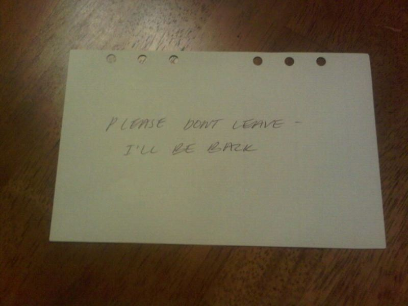
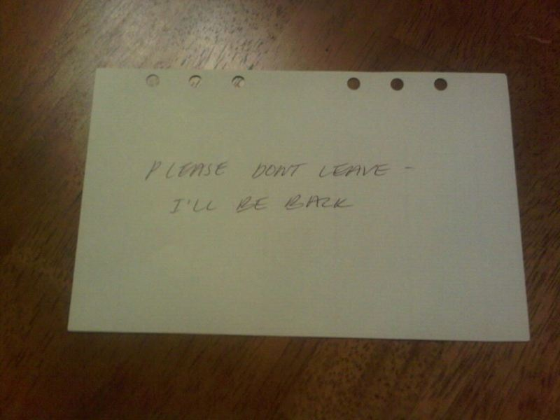

Autmn-9/15/2014 You hide under the bed just like the 911 operator said. You hold your breath as and try to stay hidden. The intruder used his knife to "pick" the lock. He slowly opens the door and walks into the room. He sees that you called someone because you left the phone on floor. He picks it up and hears the operator say, "Hello, hello, where are you?" He hangs up the phone and looks around. He sees the closet door and opens it. He looks through all the clothes. When he finds nothing, he turns around and looks at the bed. Just as he heads for it police sirens begin to sound around the neighborhood. He heads for the window and sees that police cars are lined up in the streets. He talks to himself, "I can't get caught, there are still things need to be done." You hear footsteps and then complete silence. Then a sound of relief, "Police, show yourself." You emerge from under the bed, barley believing what had happened. The police search for him but can't find anything, but you notice something on your shelf, a note. You open it.
HOME Thank you for playing :D now go back and find the other endings
 
